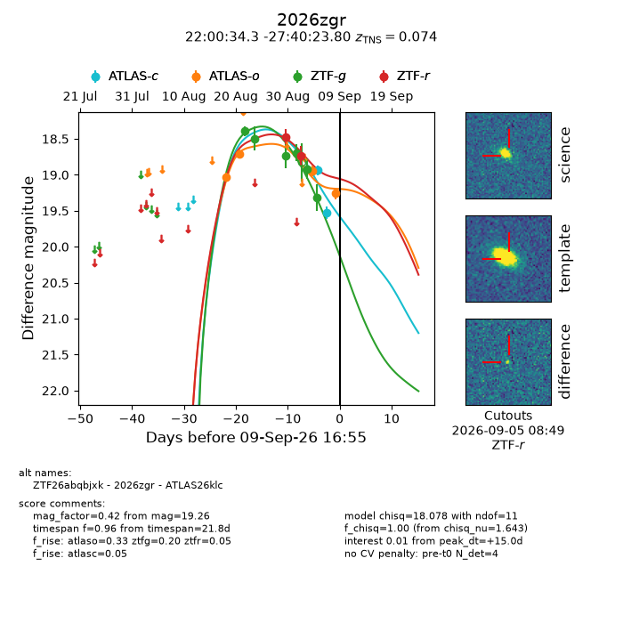
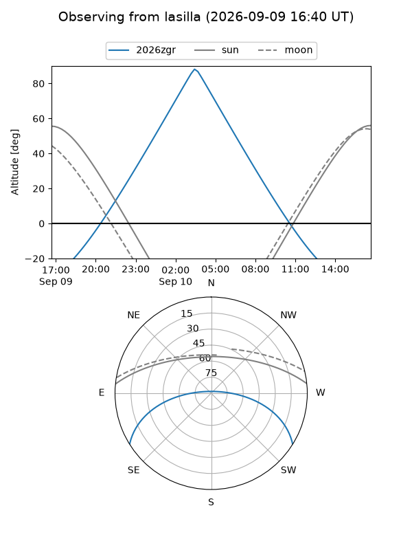
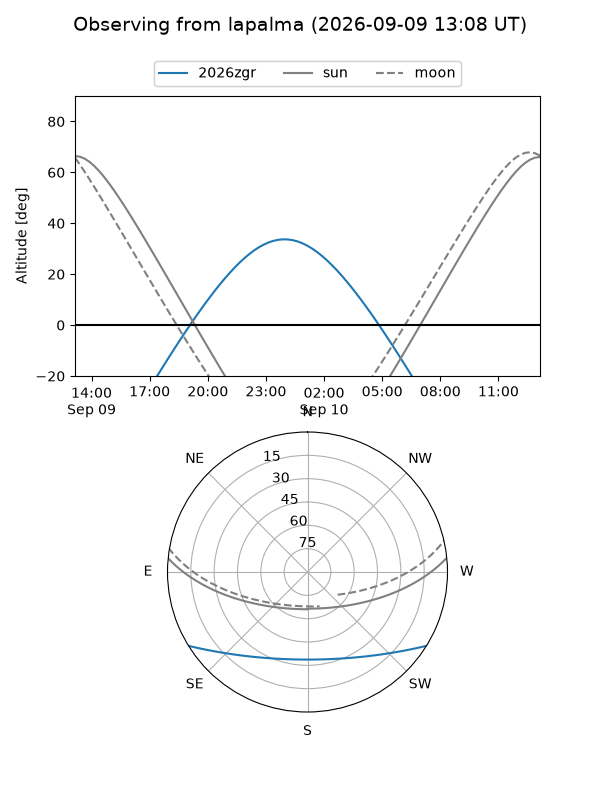
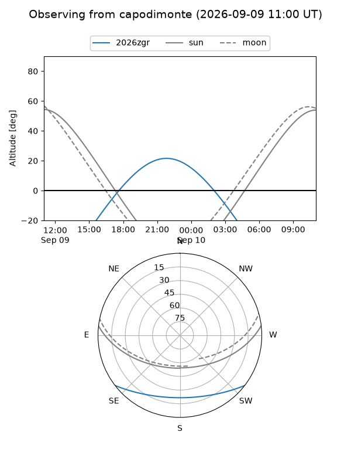
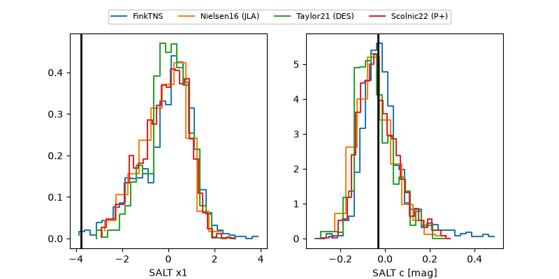

2026zgr
Target 2026zgr at 2026-09-09 16:57
Aliases and brokers:
FINK-ZTF: ztf.fink-portal.org/ZTF26abqbjxk
Lasair-ZTF: lasair-ztf.lsst.ac.uk/objects/ZTF26abqbjxk
ALeRCE-ZTF: alerce.online/object/ZTF26abqbjxk
YSE-PZ: ziggy.ucolick.org/yse/transient_detail/2026zgr
TNS name: wis-tns.org/object/2026zgr
Direct TNS query: direct search
alt names
ZTF26abqbjxk (ztf,fink_ztf)
2026zgr (tns,yse)
ATLAS26klc (atlas)
Coordinates:
equatorial (ra, dec) = 330.1431,-27.67328
equatorial (HMS+DMS) = 22:00:34.33,-27:40:23.80
galactic (l, b) = (21.9447,-52.26650)
Flags:
TNS type: SN Ia
TNS redshift: 0.0740
peak dt: +15.0
Photometry:
last atlasc=19.52, atlaso=19.26, ztfg=19.31, ztfr=18.73
2 atlasc, 4 atlaso, 6 ztfg, 2 ztfr detections
Lightcurve

Visibility



Additional plots
